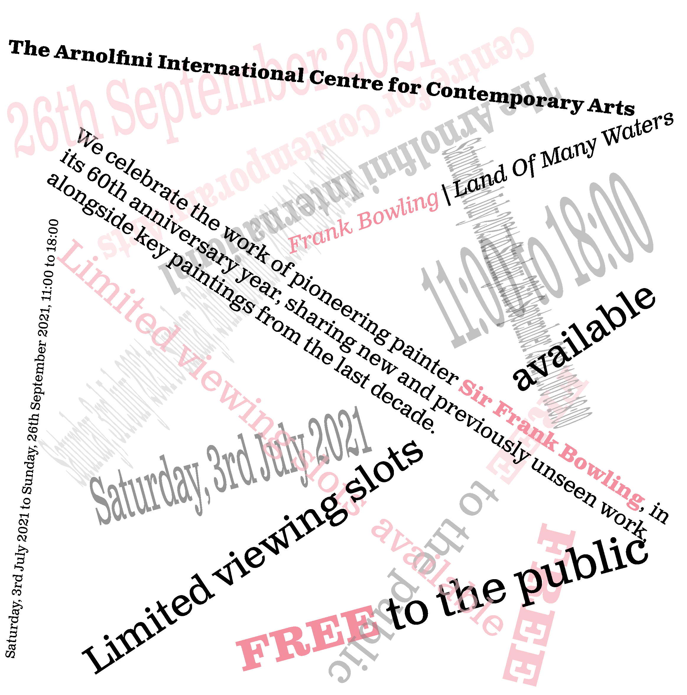

"For this rule, i drew an imaginary line in the middle of the screen.
I then placed in the text on each side of the line and placed some shapes to fill up the white spaces."
Axial

"For this rule, i made a radiating point with some shapes to have more texture to it.
I then paste in the words i drew along the shapes making a radial effect.""
Radial

"For this rule, created a starting point which is the shape i made. I didn't place it in the
middle as this creates a more interesting effect. I then bend the words and slowly branch up and down from the point"
Dialatational

"Grid is pretty straight foward. All i did was picture a few boxes in a canvas and place
each paragraph into each box creating a grid like effect.
Grid

"I created a wavy shape at the bottom of the canvas to allow people's brain
to visualise that the words are going to be wavy as well. I then create a similar wave form on the words"
Transtional

"Modular is quite a simple rule. What i did was making shapes that acts like a box.
I then place each paragraphs into each box.""
Modular

"Bilateral is the most boring rule as it means centered. However to make this interesting
i did not just centered the text but i also tilt it both ways creating an interesting effect for the viewers"
Bilateral

This goes without saying as random literally means random. All text are scatered around
randomly. I randomly rotate the text to it's ideal position. To fill in the white spaces, i copied and paste each text
and reduce the opacity"
Random